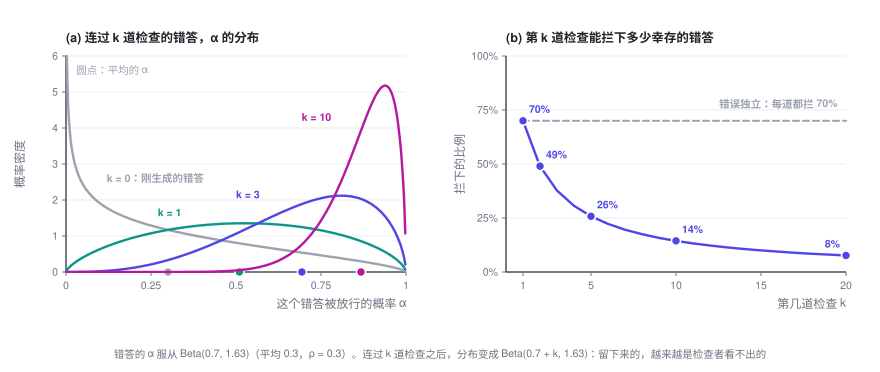
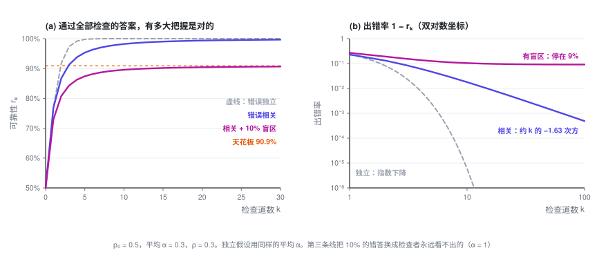
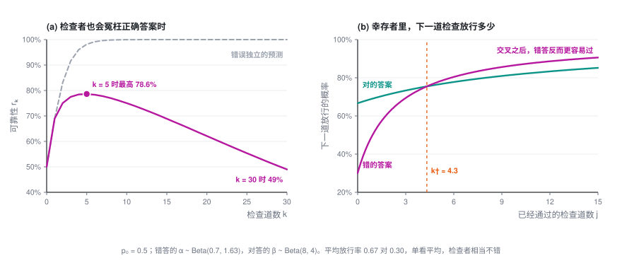
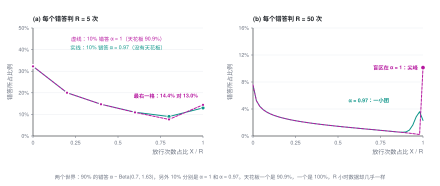

多加几道检查，为什么不够：相关错误与验证天花板
让模型生成答案，再让模型检查，不过关就重来，这是今天搭 AI 系统最常见的做法之一。直觉是：一道检查不够，就多加几道。这一篇说明，当检查者和生成者有共同的盲区时，这个直觉会在哪里失灵、失灵到什么程度，以及怎样事先把它测出来。
可靠性专题 · 第 2 篇 / 共 2 篇 · 阅读约 20 分钟
← 冯·诺依曼 1952：多数表决、阈值与多路复用 · 专题目录 · 已是最后一篇 →
这是「用不可靠的模型，搭可靠的系统」的第二篇，也是我的论文 arXiv:2607.13918 的通俗版。读过第 1 篇更好，但不是必须。用到的数学只有条件概率和期望。
本篇会用到的符号
| 符号 | 含义 |
|---|---|
| p_0 | 生成器一次给出正确答案的概率 |
| k | 串联的检查道数 |
| r_k | 通过全部 k 道检查的答案是对的概率，即可靠性 |
| o | 几率（odds）：答对的概率 ÷ 答错的概率 |
| \alpha | 一道检查放行某个错答的概率，因错答而异 |
| G | 生成器的全部错答上，\alpha 的分布 |
| m_k | \mathbb E[\alpha^k]，一个错答连过 k 道检查的概率 |
| \bar\alpha | \alpha 的平均值 |
| \rho_v | 同一个错答的两次判决之间的相关系数 |
| b | \alpha 的分布在 1 附近有多厚：越小，几乎骗得过检查者的错答越多 |
| 1-\pi | 盲区：检查者永远看不出的错答所占的比例 |
| \beta | 一道检查放行某个正确答案的概率，第 7 节才用到 |
| R | 测量时，每个错答重复判决的次数 |
专题的整体介绍见专题目录。
1. 问题：一道检查接一道检查
设想一个很常见的流程：模型给出一个答案，交给 k 道检查，只有 k 道全部放行，答案才会被采用，否则丢掉重来。每道检查可以是同一个检查模型再调用一次，也可以换一个提示词或换一个模型。
我们关心的是：通过了全部 k 道检查的答案，有多大把握是对的？记作 r_k。这个流程最后交出去的，一定是某个通过了全部检查的答案，所以 r_k 就是用户拿到的答案的正确率。
先做两个约定：
- 生成器一次给出正确答案的概率是 p_0。
- 检查者从不冤枉正确答案：对的答案，每道检查都放行。这当然是理想化，第 7 节再放开。
剩下要考虑的，就是检查者会不会放过错答。一道检查放行一个错答的概率，记作 α。
用第 1 篇的话说，每道检查都是一个恢复器官。冯·诺依曼的结论要求它们的错误彼此独立，这一篇要问的就是：不独立时会怎样。
2. 错误独立时：每道检查乘上一个固定倍数
用几率来算最干净：o = P(\text{对}) / P(\text{错})，检查之前是 o_0 = p_0/(1-p_0)。
一个答案通过了一道检查。对的答案一定通过，错的答案以概率 α 通过。按贝叶斯公式，几率变成
如果每个错答被每道检查放行的概率都是同一个 α，各道检查又互相独立，那么错答连过 k 道的概率就是 \alpha^k，于是
每多一道检查，对数几率就加上同样一份 \ln(1/\alpha)，出错率 1 - r_k 按指数下降。Aksu 2026 年提出的 Odds Law 把这条规律写成了一般形式，同时明确说，检查之间部分相关时该怎么算，仍是一个没有解决的问题。
代入具体的数：p_0 = 0.5，α = 0.3，也就是每道检查能拦下 70% 的错答。一道检查之后可靠性是 76.9%，五道之后 99.8%，十道之后 99.9994%。照这个算法，想要多高的可靠性，多加几道检查就行。
3. 但检查者往往一再看走眼
问题出在「每个错答被放行的概率都一样」这个假设上。
同一个错答，检查者看一次没发现，再看一次，多半还是发现不了。原因很朴素：检查者和生成者往往出自同一类模型、同一类数据，生成器容易犯的错，恰恰也是检查者容易看漏的。有实验专门测过：把同一个错误分别写进用户的话里、或写进模型自己的输出里，其余上下文完全相同。14 个开源模型普遍是前一种能改出来，后一种改不了，论文测得的「自我纠错盲区」平均为 64.5%（Tsui，2025）。另一项研究发现，没有外部反馈时让模型自我纠错，推理题的准确率有时不升反降（Huang 等，2024）。
所以更贴近实际的看法是：α 不是检查者的一个固定参数，而是每个错答自己的属性。 有的错一眼就能看出来，α 接近 0；有的错这个检查者怎么也看不出，α 接近 1。在生成器的全部错答上，α 有一个分布，记作 G。
有了这个看法，模型只需要一条假设：给定某个错答，k 道检查各自独立地以概率 α 放行它。比如同一个检查模型在温度大于 0 时调用 k 次，或者几个盲区相同的检查者各看一次。相关性并不是来自检查之间互相影响，而是来自它们面对的是同一个 α。
这种相关可以用一个数概括，即同一个错答两次判决之间的相关系数：
\rho_v = 0 表示所有错答一样难查，回到第 2 节的独立情形；\rho_v = 1 表示错答只有两种，要么第一道就被拦下，要么永远拦不下。
4. 精确的公式只有一行
一个错答连过 k 道检查的概率，是先对每个错答算 \alpha^k，再对所有错答取平均：
对的答案一定通过，于是和第 2 节一样算几率，得到
整套理论就从这里出发。和独立情形相比，只是把 \bar\alpha^k 换成了 \mathbb E[\alpha^k]，但两者差得很远：α 有高有低时，\mathbb E[\alpha^k] 总比 \bar\alpha^k 大，而且 k 越大差得越多。α 接近 1 的那部分错答，\alpha^k 几乎不衰减，平均值被它们撑住了。
举例时，取 α 服从 Beta 分布，因为它的各阶矩有简单的闭式。若 \alpha \sim \text{Beta}(a, b)，则
下文的例子都取 \bar\alpha = 0.3、\rho_v = 0.3，对应 a = 0.7、b \approx 1.63。这是一个不算差的检查者，平均能拦下 70% 的错答。
5. 幸存者偏差：后面的检查越来越没用
\mathbb E[\alpha^k] 为什么衰减得慢？看看已经连过 j 道检查的错答是什么样子。
一个错答能连过 j 道，概率是 \alpha^j。所以在幸存下来的错答里，α 的分布相当于乘上 \alpha^j 再重新归一：α 大的错答活下来的机会多，α 小的早被拦掉了。对 Beta 分布，这一步恰好得到 \text{Beta}(a+j,\,b)，幸存者的平均 α 是 (a+j)/(a+b+j)，随 j 一路升高。
第 j+1 道检查面对的不是新鲜的错答，而是这些幸存者，它能拦下的比例是 1 - (a+j)/(a+b+j)：
| 第几道检查 | 1 | 2 | 3 | 5 | 10 | 20 |
|---|---|---|---|---|---|---|
| 拦下幸存错答的比例 | 70% | 49% | 38% | 26% | 14% | 8% |
检查者本身没有变差，变的是它面对的错答。能连过好几道检查的错答，恰恰是检查者看不出的那些。

换成对数几率来说，第 j+1 道检查带来的证据是 \ln(m_j / m_{j+1})，也就是负的「幸存者平均 α 的对数」，一道比一道少。所以 \ln o_k 随 k 是一条凹曲线。独立假设给出的直线，正好穿过这条曲线的前两个点（k = 0 和 k = 1），之后处处在曲线上方。独立假设没有高估第一道检查，它高估的是之后的每一道。这对任何有高有低的 α 分布都成立，并不依赖 Beta。
差距有多大？还是 p_0 = 0.5、\bar\alpha = 0.3、\rho_v = 0.3：
| 检查道数 k | 独立假设算出的可靠性 | 实际可靠性 | 出错率被低估了多少倍 |
|---|---|---|---|
| 1 | 76.9% | 76.9% | 1 |
| 2 | 91.7% | 86.7% | 1.6 |
| 3 | 97.4% | 91.3% | 3.3 |
| 5 | 99.8% | 95.3% | 约 20 |
| 10 | 99.9994% | 98.2% | 约 3000 |
按独立假设来配检查的人，以为买到了五个 9，实际买到的是 98%。反过来算，要让可靠性达到 99%，独立假设说 4 道检查就够，实际要 15 道；要达到 99.9%，是 6 道对 65 道。
6. 从指数到多项式，再到天花板
k 很大时，m_k 取决于 α 的分布在 1 附近长什么样。如果 α 的密度在 1 附近像 (1-\alpha)^{b-1}，那么
C 是一个常数，Beta 分布时 C = \Gamma(a+b)/\Gamma(a)。出错率不再按指数下降，而是按多项式下降。b 衡量的是「几乎骗得过检查者」的错答有多少：b 越小，这样的错答越多，下降越慢。
例子里 b \approx 1.63，检查道数翻一倍，出错率只降到三分之一左右（2^{1.63} \approx 3.1）。而在独立假设下，从 5 道加到 10 道，出错率要降 400 多倍。
更糟的情况是，有一部分错答这个检查者永远看不出来，也就是 α = 1。设这部分占全部错答的 1-\pi。它们过多少道检查都不会被拦下，所以 m_k \to 1 - \pi，可靠性有一道天花板：
例子里若有 10% 的错答属于盲区，r_\infty = 0.5/(0.5 + 0.05) \approx 90.9\%。无论加多少道检查，都过不了 91%。 换成证据的说法：同一类检查者串得再多，能提供的全部证据也只有 -\ln(1-\pi)。这个上限只由盲区的大小决定，和单道检查有多好、串了多少道都无关。

投票那一侧也有类似的现象。同一个模型采样再多次、再怎么投票，准确率也有上限：票数再多，也只能答对那些「单次答对率本来就过半」的题。相关投票的这类结论，Ladha 在 1993 年就讨论过，Aksu 的论文也证明了这个上限（定理 7.2）。区别在于，投票时每一票面对的都是同一道题；串联检查却多了一层筛选，后面的检查面对的是前面筛剩下的。上一节的凹曲线正是这层筛选造成的，投票里没有对应的东西。
7. 检查太严，还会帮倒忙
现在放开第 1 节的约定：检查者也会冤枉正确答案。有的答案明明是对的，只是写法少见、代码风格不常见，检查者就一再拒绝。于是正确答案也有一个因题而异的放行概率 β，分布记作 H。
同样的推导，几率变成
这是一场赛跑：最后一项是拦下错答的收益，越往后越少；中间一项是错杀正确答案的代价，会一直累积。
谁跑赢，取决于两个分布在 1 附近的厚薄。设 α 和 β 的密度在 1 附近分别像 (1-x)^{b_\alpha - 1} 和 (1-x)^{b_\beta - 1}，那么 k 很大时
所以只有三种结局：
- b_\alpha > b_\beta：检查越多越好，可靠性趋于 1，但只是按多项式的速度；
- b_\alpha = b_\beta：可靠性停在某个小于 1 的水平；
- b_\alpha < b_\beta：检查加到后来会帮倒忙，可靠性趋于 0。
说成大白话：对的答案和错的答案，哪一边「几乎总能通过」的先耗尽，哪一边就输。 如果「每次都会被放行的正确答案」比「每次都能蒙混过关的错答」还稀少，检查串得越长，正确答案就比错答淘汰得更快。
看一个具体例子（论文中的表 2）。α ~ Beta(0.7, 1.63)，和前面一样；β ~ Beta(8, 4)，平均放行 67% 的正确答案。单看平均，这个检查者不差：放行正确答案的概率是放行错答的 2.2 倍，第一道检查也确实有用。但 b_\alpha = 1.63 < b_\beta = 4，属于第三种结局：可靠性在第 5 道检查时最高，约 79%，之后一路下滑，第 20 道时是 62%，第 30 道时已不到一半。而用同样的平均值按独立假设去算，可靠性会一路涨到五个 9。

拐点在哪里？第 j+1 道检查有用，当且仅当在前 j 道的幸存者里，正确答案仍比错答更容易被放行：
化简后是 j 的一次不等式，交叉点为
例子里 k^\dagger \approx 4.3，所以过了第 5 道，再加检查就是负收益。注意这个最优道数和成本无关：哪怕检查不花钱，也不该超过它。
还有一点值得记住。在独立假设下，判断「加检查有没有用」只需看平均的似然比是否大于 1；相关时这就不够了。平均值只保证第一道检查有用，最终的方向由两个分布在 1 附近的尾巴决定，而尾巴和平均值之间没有必然联系。
8. 怎么测：同一个答案判两次
上面的结论都只依赖 α 的分布 G，而 G 可以从检查日志里估计出来。做法是：
- 准备一批有标准答案的题，让生成器作答，只留下它自己答错的那些。用人为构造的错答或别的模型的错答来测，测到的是另一个 G。
- 对每个错答，让检查者（温度大于 0）重复判 R 次，记下放行的次数 X_i。
- 用放行次数估计 G 的各阶矩：把 \binom{X_i}{k} / \binom{R}{k} 对所有错答取平均，就是 \mathbb E[\alpha^k] 的无偏估计，最多能估到第 R 阶。
估计 \rho_v，每个错答判两次就够。R = 2 时，设两次都放行的错答占 q_2，只放行一次的占 q_1，那么
举个例子。1,000 个错答，每个判两次：
| 两次都放行 | 放行一次 | 两次都拦下 | |
|---|---|---|---|
| 实测 | 153 | 294 | 553 |
| 假如错误独立（平均放行率同为 30%） | 90 | 420 | 490 |
算出来 \hat m_1 = 0.30，\hat m_2 = 0.153，\hat\rho_v = (0.153 - 0.09)/(0.3 \times 0.7) = 0.30。两次都放行的错答，比独立时多了七成，多出来的这部分就是相关性。
由此得到一条很实用的规则：先用 R = 2 测出 \rho_v。\rho_v 很小，加检查就是便宜的可靠性；\rho_v 很大，就别再加同一类检查，把钱花在去相关上。
天花板却很难测：它取决于有没有 α 恰好等于 1 的错答，而判 R 次只能分辨到 1/R 左右：α = 1 的错答和 α = 0.97 的错答，判 5 次多半都是全部放行。下图是两个世界：都有 90% 的错答服从同一个 Beta 分布，剩下 10% 在一个世界里 α = 1（天花板 90.9%），在另一个世界里 α = 0.97（没有天花板）。R = 5 时，两者的数据几乎一样；R = 50 时才分得开。\rho_v 测起来便宜，天花板测起来昂贵。

论文在合成数据上验证了这套流程：真实的 \rho_v 为 0.05、0.30、0.50 时，估计值分别是 0.050、0.291、0.502。只用 R = 8 的数据拟合，再外推到第 5 道检查，预测的可靠性是 95.4%，真实值 95.3%，而独立假设给出 99.8%。在真实模型的检查日志上做测量，是下一步的工作。
9. 该怎么办
结论很直接：\rho_v 大的时候，可靠性不是靠多加检查买来的，而是靠让检查者和生成者去相关。
- 换一个模型家族来检查，不要让同一个模型再看一遍；
- 换一种模态或表示，比如把推理过程写成代码跑一遍，而不是把文字再读一遍；
- 引入工具和外部证据：单元测试、执行结果、检索到的原文、能核对的计算；
- 哪怕是很小的改动，只要能打破共同的盲区，也会有明显效果。Tsui 发现，只是在模型自己的输出后面接上一个「Wait」，自我纠错的盲区就缩小了近九成。
放到这一篇的模型里，换上一个相关性更低的检查者，作用就是让 α 的分布在 1 附近变薄：b 变大，盲区 1-\pi 变小，天花板随之抬高。
这个模型也有边界。它把检查之间所有的共同结构压成一个标量 α，就像冯·诺依曼把所有元件的出错概率压成一个 ε；真正来自不同家族的检查者，需要用一个向量来描述。Beta 分布只是为了得到闭式，渐近结论只依赖尾部的形状。
最后回到冯·诺依曼。他在恢复器官里放了一个随机置换，专门用来打乱线束，让进入同一个表决器的错误互相独立。今天我们没法打乱一个模型的盲区，能做的，是换一个盲区不同的检查者。
参考文献
- Jiangang Han. Partially Correlated Verifier Cascades in LLM Harnesses: Concave Log-Odds, Polynomial Reliability, and Blind-Spot Ceilings. arXiv:2607.13918, 2026. 代码与合成数据实验：github.com/jianganghan/harness-verifier-cascades。
- John von Neumann. Probabilistic Logics and the Synthesis of Reliable Organisms from Unreliable Components. In C. E. Shannon, J. McCarthy (eds.), Automata Studies, Annals of Mathematics Studies 34, pp. 43–98. Princeton University Press, 1956.
- Hidayet Aksu. Odds Law: The Decomposition Algebra on How Intelligence Organizes Itself to Solve Difficult Problems Reliably. arXiv:2606.15712, 2026.
- Ken Tsui. Self-Correction Bench: Uncovering and Addressing the Self-Correction Blind Spot in Large Language Models. arXiv:2507.02778, 2025.
- Jie Huang, Xinyun Chen, Swaroop Mishra, Huaixiu Steven Zheng, Adams Wei Yu, Xinying Song, Denny Zhou. Large Language Models Cannot Self-Correct Reasoning Yet. ICLR 2024.
- Krishna K. Ladha. Condorcet's Jury Theorem in Light of de Finetti's Theorem: Majority-Rule Voting with Correlated Votes. Social Choice and Welfare, 10(1):69–85, 1993.
可靠性专题 · 第 2 篇 / 共 2 篇
← 冯·诺依曼 1952：多数表决、阈值与多路复用 · 专题目录 · 已是最后一篇 →